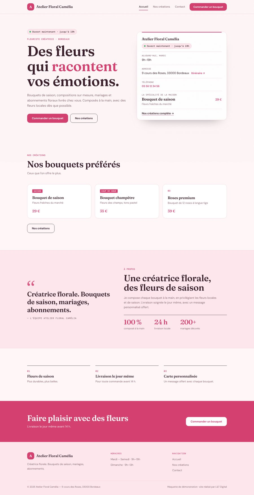

GARAGE
GARAGE · SALON · RESTO · ATELIER · BOUTIQUE · CAFÉ · GARAGE · SALON · RESTO · ATELIER · BOUTIQUE · CAFÉ ·
BOULANGERIE · FLEURISTE · BARBIER · PIZZERIA · BOULANGERIE · FLEURISTE · BARBIER · PIZZERIA ·
COACH · PLOMBIER · FROMAGERIE · TATOUEUR · COACH · PLOMBIER · FROMAGERIE · TATOUEUR ·
CAVE · BOUCHERIE · PHOTOGRAPHE · ARTISAN · CAVE · BOUCHERIE · PHOTOGRAPHE · ARTISAN ·
Ton
SALON
RESTO
ATELIER
MAGASIN
CAFÉ
COMMERCE
GARAGE
SALON
RESTO
ATELIER
MAGASIN
CAFÉ
COMMERCE
mérite d’être vu
SITE · SITE · SITE · SITE · SITE · SITE ·
TE · SITE · SITE · SITE · SITE · SITE · SI
· SITE · SITE · SITE · SITE · SITE · SITE
On te crée
un beau
SITE

ton
LOGO
tes
PUBS
tes
RÉSEAUX
Un style
pour chaque
MÉTIER
MÉTIER
MÉTIER
Tu nous écris.
On crée.
C’est en ligne.

Publier
Et ça coûte
COMBIEN
?
85
€
85€
85€
85€
8585
Un site dès
€
€
€
PRIX
PRIX
PRIX
annoncé à l’avance.
RETOUCHES
incluses.
Livré en
48
72
48
à
72
h
Tout au
même endroit
@l.t_digital
@
ÉCRIS-NOUS
@l.t_digital
LIEN EN BIO
Site dès 85 € · prêt en 48 à 72 h